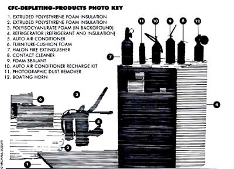
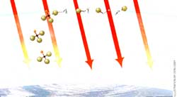
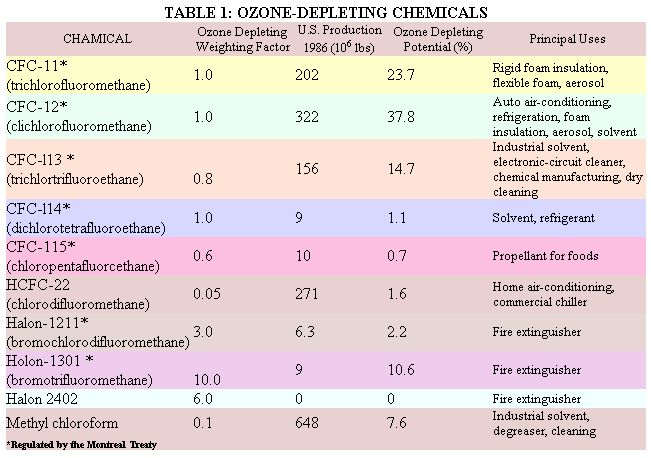
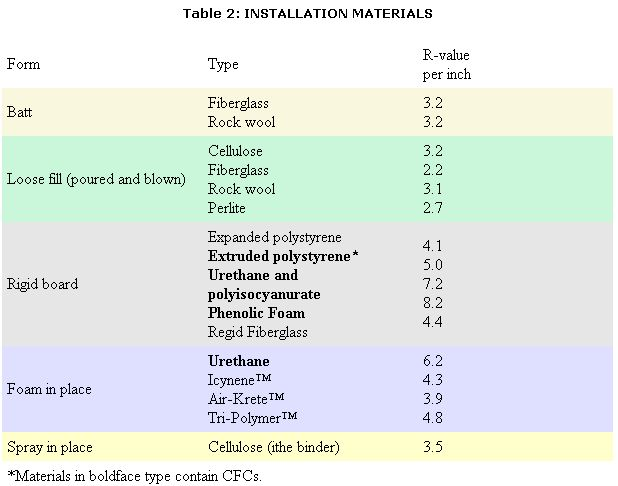

Taking personal responsibility and action to reduce ozone depletion. By Alex Wilson
MOST OF US ARE MORE THANWilling to make a few changes in lifestyle if it's good for the environment. We're learning to get by without pesticides in the garden. More and more we drive relatively energy-efficient cars. Surveys show that most of us would even be willing to pay a little more on our electric bills if doing so would help reduce acid rain. But wha t about ozone depletion? We've heard a lot about CFCs, or chlo rofluorocarbons, and their destruction of the earth's protective ozone layer. How can we minimize our use of these chemicals?
Chances are you're a pretty big user of CFCs. Eighty percent of cars sold in the U.S. have air conditioners - the largest single source of CFC release into the atmosphere. You almost certainly have a refrigerator in your home, with one type of CFC used as the refrigerant fluid and another in the insulation. If you've done any construction in the last few years, you probably used foam insulation and cans of spray-foam sealant containing CFCs - particularly if you were building an energy-efficient house. CFCs are also used in foam cushions, packaging materials, cleaning fluids for electronic equipment, some aerosol propellants, and many consumer products such as boat horns, tire inflators, and Dust-Off for cleaning camera lenses. This article will review where CFCs are used around the home and business and describe some of the alternatives currently available or under development.
CFC's take years to reach the stratosphere, where they destroy
the UV-shilding ozone layer.
Fig. 1: UV light breaks a chlorine atom off a CFC molecule. The chlorine reacts with ozone (O 3 ), forming molecular oxygen (O 2 ) and chlorine monoxide. The oxygen is pulled off that molecule by a free oxygen atom, leaving the chlorine atom to start the process all over again.
Concerns over ozone have generated quite a bit of confusion in recent years. Ozone is a bad guy at ground level, where high levels present a serious pollution problem in most major cities. But the same compound, a form of oxygen, is a good guy in the upper atmosphere, where it blocks out harmful ultraviolet light. Scientists first theorized 15 years ago that man-made chemicals could break down the protective ozone layer. Their warnings led to a ban of CFC aerosols in this country in 1978. After taking that action, we pretty much forgot about ozone depletion and CFCs for 10 years. All that complacency vanished, however, after scientists discovered a large hole in the ozone layer over Antarctica in 1985.
The ozone hole over Antarctica, and now a thinning of the ozone layer above the Arctic, has led to worldwide action to curtail the use of the primary culprits: CFCs and related compounds called halons. These chemicals introduce chlorine and several other reactive elements into the stratosphere 15 to 50 kilometers above the earth's surface. There, the chlorine ions react with ozone, breaking off one of the three oxygen atoms and forming a transition compound, chlorine monoxide, and molecular oxygen (see Fig. 1). The chlorine monoxide in turn reacts with another ozone molecule, repeating the process. A single chlorine atom can break down tens of thousands of ozone molecules in this manner.
Because ozone blocks out harmful ultraviolet light, the resultant thinning of the ozone layer is a big concern to life on earth. With the protective barrier gone, high-energy UV-B radiation reaches earth, where it could wreak havoc. Among the human health effects of UV-B radiation are acute sunburn, skin cancer, cataracts and other eye disorders, and possible suppression of the immune system. UV-B radiation could also reduce agricultural crop yields, kill organisms in the highly productive top layer of the ocean, exacerbate smog in some urban areas, and speed the degradation of paints, plastics, and other manmade materials.
CFCs are able to introduce chlorine to the stratosphere primarily because the chemicals are so stable. Most gaseous compounds readily break down within a period of days or weeks when released into the air, but CFCs are highly stable-some lasting more than 100 years. Over a period of years or decades, winds carry the CFCs up into the stratosphere, where the high-energy UV-B radiation has enough power to break them apart, as described.
Ironically, it is this tremendous stability that made CFCs such valuable industrial chemicals. Being stable, they don't react with refrigerator coils or electronic circuit boards, they remain nonflammable, and they are nontoxic. On top of that, they are inexpensive to produce and exhibit a wide range of highly desirable properties for use in manufacturing and refrigeration. As an example of the durability of these chemicals, a refrigerator charged with CFC refrigerant in the 1950s could still be using the same fluid today, more than 30 years later. Because of this, the CFC industry, which was born around 1920, grew into a multibillion-dollar industry by the 1980s, with 700 million pounds produced in 1986.
Intense concern over ozone depletion and CFCs has led to unprecedented international action to reduce the production and use of CFCs and halons (which are used in fire extinguishing systems). In September 1987, 24 nations and the European Economic Community met in Montreal and signed a treaty, Substances That Deplete the Ozone Layer. The agreement, which took effect after the necessary number of countries ratified it, limits annual consumption of five CFCs (CFC11, -12, -113, -114, and -115) to 1986 levels starting July 1, 1989. This represents about a 20% reduction from 1988 levels, because of recent growth in CFC use. Reductions to 80% and 50% of 1986 levels will occur in 1993 and 1998, respectively. Helena are regulated separately from CFCs. Starting in 1992, halon consumption will be frozen at 1986 levels.
Some CFC refrigerant installed in the 1950s could still be in use today.
Following this action, several European nations and the United States have called for total phaseout of CFCs by the year 2000. In the U.S. there are several bills in Congress that would accomplish a phaseout by 2000 or even sooner. One of the big questions that remains is whether other compounds will be added to the restrictions. The HCFCs, including HCFC-22, which is currently available, are much less damaging to the ozone, but they do exhibit some ozone-depletion effects-between 3 and 7% that of CFC-11 and -12. Many of the replacements being investigated by chemical companies are in this class of compounds.
In addition to destroying the protective ozone layer, CFCs are also greenhouse gases. They trap outgoing heat from the earth's surface even more effectively than carbon dioxide-the number one offender. Had there been no constraints placed on CFC aerosol use in the late '70s, some experts claim that CFCs would today account for more global warming potential than CO 2 !
Finding alternatives to CFCs involves first figuring out which products use the chemicals. That isn't always easy. Table 1 lists the most common CFC and halon compounds, along with their relative ozone-depletion effects, quantities produced, and uses. To help you figure out whether a particular product contains one of the more harmful CFCs or halons, the chemical names you might find on a label are given. But unless you have a degree in organic chemistry, you may have some trouble even reading the names, let alone recognizing them.
It's not always easy to determine which products use
ozone-depleting chemicals.
The next problem you'll encounter is that not all products manufactured with CFCs are identified as such. Rigid foam insulation and flexible foam, for example, do not list the foaming agents. Several pieces of legislation currently under consideration would require manufacturers to clearly identify products that contain ozone-harmful CFCs.
The following paragraphs cover the most common products using CFCs. The information should help you both to identify those products and materials using CFCs and to find alternatives.
Insulation
Most rigid-board insulation is produced with CFC-11 or -12 as the blowing agent. Injected into the foam as a liquid during manufacturing, the CFC boils, causing gas bubbles to form in the curing foam. The cured foam has bubbles of CFC gas throughout. A major benefit of CFC-produced insulation is that CFCs do not conduct heat as quickly as air does, so the R-value is higher. You get more insulation in a thinner layer. As a result, CFC-foamed insulation materials have grown tremendously in popularity over the past 20 years. Insulation accounts for about 30% of the CFCs used each year.
Common insulation materials are listed in Table 2. You can see that most rigid insulation boards are produced with CFCs, including urethane, polyisocyanurate, phenolic foam, and extruded polystyrene. Foam-in-place urethane insulation is also produced with CFCs. The only insulation-board materials that don't contain CFCs are expanded polystyrene (commonly called EPS or beadboard) and rigid fiberglass. Batt and loose-fill insulation materials such as fiberglass, rock wool, cellulose, and perlite don't contain CFCs.
The distinction between extruded polystyrene and EPS needs clarification. Both have the same chemical base (styrene), but production differs. With EPS, tiny beads of styrene are mixed with pentane and are expanded (much like popcorn), The expanded beads are molded into large blocks that are then sawn into boardstock. With extruded polystyrene, on the other hand, the styrene is mixed with CFC-12 and injected in an extruding machine. The CFC expands the sty rene in one continuous board rather than in separate beads. Extruded polystyrene generally has higher density, greater compressive strength, and higher R-value.
Alternatives to CFC-containing insulation are on the way but will be more expensive.
To attain high energy efficiency in homes without using CFC-containing insulation requires building thicker walls. Instead of using 2 X 4s, for example, framing can be done with 2 X 6s (or, for super-insulated buildings, 2 X 8s or double 2 X 4s), and the foam sheathing eliminated. Even though the walls will be thicker than a comparably insulated house with CFC-foam insulation, the cost is often lower because fiberglass and cellulose insulation are less expensive than rigid foam.
If you want to use rigid insulation, stick with expanded polystyrene or rigid fiberglass. EPS is produced in dozens of factories around the country, though it isn't readily available in building supply centers. When ordering EPS, you can usually specify a higher-density product that will insulate better and provide greater compressive strength, though the cost will also be higher. Rigid fiberglass for wall sheathing, unfortunately, is not readily available in this country, though a few companies import a product from Canada.
Within several years, the foam insulation industry expects to have eliminated CFCs from all foam insulation. Making that change is easier with some products than with others. With extruded polystyrene, the change is relatively easy. In fact, Dow Chemical, the manufacturer of Styrofoam-brand extruded polystyrene, has begun shifting plants over from a process using CFC-12 to one using a less ozone-destructive HCFC foaming agent that is commercially available. Doug Draper, a spokesman for the company, said Dow has already converted two of their six U.S. plants and expects to complete all conversions by mid-1990.
Unfortunately, there are currently no commercially available replacements for the CFC-11 used in urethane-, polyisocyanurate-, and phenolic-foam insulation. CFC manufacturers are investigating several promising alternatives, including HCFC123 and HCFC-141b, but they won't complete toxicity and durability testing for these chemicals for another three to five years. Also, even when available, these newer HCFCs are expected to be considerably more expensive than the CFCs they'll replace. Higher production costs will make HCFCproduced insulation even less competitive with fiberglass and cellulose on a cost-per-R-value basis.
Spray-foam sealants are among the most exciting products to come along in the construction industry in the past decade. These aerosol sprays are used to set window and door frames tightly into place and to seal electrical penetrations and other cracks and gaps around the house. The urethane insulation bonds extremely well with most surfaces and has played an important role in helping builders to produce very tight, energy-efficient homes.
Until recently, all foam sealants relied on CFCs as the foaming agent. Within the past year, however, two manufacturers have come out with non-CFC foam sealants. Convenience Products, Inc. (4205 Forest Park Blvd., St. Louis, MO 63108; 314/349-5333) recently introduced a sealant, Touch 'n Foam Ozone Safe, that uses a hydrocarbon foaming agent. While flammable during foaming and for several hours after, the hydrocarbon evaporates, and the cured foam is comparable in fire safety to CFC-foamed urethanes. The cured foam will not have as high an R-value, but that shouldn't make much difference in a sealant application.
Todol Products, Inc. (P.O. Box 398, Natick, MA O 1760; 508/879-7741) last year introduced a European product, Pur-Fil, which uses an HCFC foaming agent that's considerably less harmful to the ozone. Like their older CFC-foamed product, this one contains no hydrocarbons and so doesn't pose any fire concern.
If you have an application for spray-foam sealant, look carefully through the products at your building supply center. The foaming agent may not be clearly listed. If you don't see specific mention on the can that the product is ozone-safe, however, assume it contains CFCs.
Refrigerators pose a unique problem in efforts to reduce the use of CFCs. They rely upon CFCs in two very important ways: first, as the circulating refrigerant used in the compressor cycle to cool the refrigerator; and second, in the urethane foam used to insulate it. CFC-12 has been the refrigerant of choice for decades. It has an excellent record of performance and can provide the necessary cooling for both the refrigerator and freezer compartments.
Because homeowners want as much inside volume as possible while maintaining outside dimensions that will still fit into the kitchen, space is at a premium in refrigerators. Therefore, insulating with five- or six-inch-thick walls is just not acceptable, according to manufacturers.
Efforts to find alternatives are progressing rapidly in the refrigerator industry, but experts say the changes will take a lot of time, and high efficiency may be difficult to maintain. HCFC-22 is used in commercial chillers but isn't effective for achieving temperatures below about 15°F. Efforts are underway to develop a two-stage compressor system that would enable HCFC-22 to be used in residential refrigerator-freezers. More attention is focusing on new refrigerants. HCFC-134a is considered a likely candidate to replace CFC-12, but it will be at least three to five years before the new refrigerant is on the market-assuming it passes testing. Even then, using it will require some changes in compressor design.
More radical refrigeration technologies are also being considered. Some suggest a return to ammonia as the refrigerant (used in very early refrigerators), but ammonia leaks would be smelly and potentially dangerous. One company, Cryodynamics, Inc. of Mountainside, New Jersey, is developing a Stirling-cycle cooling system using helium. Company president Dr. Steven Malaker claims that his technology, which has been used in specialized medical applications for some time, will be simpler, 25% more energy efficient, and no more expensive.
On the insulation side, the most exciting development is the prospect of vacuum-panel insulation. Various companies and research institutes are pursuing several different vacuum-panel technologies. One approach is a hard vacuum like that in a thermos bottle (10-6 torr -about a billionth of an atmosphere). A 1/8-inch-thick panel of this type could insulate to R-15. By doubling or tripling the layers, insulation levels could be further increased, and edge losses kept to a minimum. A non-CFC foam insulation might be used with such a system to protect the vacuum panel and provide rigidity. But even with a layer of foam insulation, the total wall thickness could be less than what is found in today's refrigerators, and the R-value more than double present standards.
Another approach is a soft-vacuum powder insulation. With this technology, a very fine silica powder is put in airtight panels, and a soft vacuum (1/100 to 1/1000 of an atmosphere) is drawn in the panel. Heat transfer from particle to particle in the powder is greatly reduced, and R-values up to R-25 per inch are possible. General Electric holds several patents on this technology, as do several other companies. In fact, one Japanese company, Matsushita Electric, had a refrigerator on the market four years ago with this type of insulation (the product has since been discontinued). Scientists at Oak Ridge National Laboratory measured the R-value at R-18 per inch.
Finally, a California company, Quantum Optics, is developing a vacuum-insulation technology in which monolithic silica aerogel-an unusual solid that is 80 to 90% air-is injected into sealed panels, and a soft vacuum drawn. Like the powder vacuum, this can insulate far better than the best CFC-based insulation materials. Silica aerogel and hard-vacuum panel technologies are not as close to commercialization as the softvacuum powder technology.
Until new refrigeration and insulation technologies can be developed and brought to market, refrigerator manufacturers are caught in a bind. A new-appliance efficiency bill was signed into law in 1987 that mandates higher efficiency standards in 1990 and again in 1993. When the law passed, refrigerator manufacturers thought they would be able to meet the higher efficiency requirements in part by using larger quantities of CFCs. Without increasing their CFC use, they will still be able to meet the 1990 standards, but the industry is lobbying hard to prevent still higher efficiency standards from going into effect in 1993. The industry supports the gradual phaseout of CFCs but wants to delay new energy-efficiency standards.
One observer remarked sardonically that if the refrigerator industry had been running the Manhattan Project during World War II, we might still be a nuclear-free world. The same argument could be turned around to suggest that because ozone depletion and global warming problems are so great, they warrant a huge national research effort addressing energy efficiency and CFC alternatives-one on the scale of the project that resulted in the atomic bomb.
Auto air conditioners are the single largest source of CFC release into the atmosphere.
Auto air conditioners account for about a quarter of the total CFCs pumped into the atmosphere each year in the United States. Eighty percent of new cars in this country come with air conditioners, and the compressor required for a midsize American car is equivalent in capacity to the one required for whole-house cooling in Atlanta, Georgia! Rapid cool-down calls for such a workhorse. Once the car's interior is cool, the system is way oversized.
Auto air conditioners use CFC-12 exclusively, as they have since the mid-50s. HCFC-22 was used for a while in some cars, but the required compressor has to operate under higher pressure, which demands heavier components. Because less weight is so desirable in cars, CFC-12 won out as the refrigerant of choice.
Manufacturers are anxiously awaiting the availability of HCFC-134a, but that is still several years away, assuming successful toxicity and durability testing. In the meantime, a tremendous reduction in CFC-12 venting to the atmosphere is possible by servicing air-conditioning systems at facilities that can reclaim the old CFC rather than simply letting it evaporate. With conventional practices, servicing and charging air conditioners release 20 to 25% of the CFC-12 into the air. Equipment to capture and reclaim CFC during servicing is just being certified by national testing labs and should begin appearing in service stations very soon. If your auto air conditioner needs servicing, ask the service station personnel if they have such equipment. If they don't, try to find a station that does. "This is the single largest opportunity for consumers to make a difference," says Steve Andersen, who heads much of the CFC work at the Environmental Protection Agency (EPA).
An interesting development under way that could greatly reduce the necessary size of auto air conditioners (and the amount of CFC refrigerant required) involves photovoltaic-powered (solar electric) ventilation systems. When cars are parked in the sun, a PV panel built right into the car roof could power a ventilation fan, pulling hot air out of the car. Because most of the air conditioner's capacity is required solely for rapid cool-down when the car has been parked in the sun, such systems could save the auto industry millions in cost for such large air conditioners while reducing CFC use considerably.
Amid a lot of fairly discouraging news about CFCs and the lack of currently available alternatives, foam packaging provides a bright spot. Already, the food packaging industry has eliminated the use of CFCs. That means when you pick up your burger and fries and a hot cup of coffee at your favorite fast-food spot, you're no longer using a product containing CFCs. (Of course, you're still adding to the solid waste problem, but that's another story.) The food packaging industry deserves tremendous credit for moving so quickly and effectively to eliminate CFCs from their products.
Similarly, most other foam packaging materials no longer contain CFCs. Dow Chemical, which manufactures Pelaf-PanPac, the so-called "plastic peanut" used in packaging, will have eliminated their use of CFCs in the product by the end of 1989, according to company spokesman Doug Draper. With another product, Ethafoam - the molded solid white foam used for packaging electronic equipment-the company has already eliminated 75% of the CFC use and will eliminate it altogether by mid-1990.
Some flexible foam padding used in cushions, mattresses, and other consumer products is made with CFCs. This accounts for about 5% of CFC use in this country. Unfortunately, just by looks alone it's very hard to tell which flexible foam is made with CFCs and which is not. In general, the CFC padding is softer and cheaper than, and generally inferior to, non-CFC padding. You're likely to find it in bottom-of-the-line chairs and sofas, for example. In fact, the flexible-foam industry refers to CFC-based flexible foam as "junk foam." CFC foams don't last as long as the quality products, so in a way it's a service to consumers to get rid of CFCs, according to Andersen of the EPA.
Eliminating CFC use in flexible foam is relatively easy, and it's happening naturally as the cost of CFCs goes up. Within a few years, even without further regulations, CFC use in padding is likely to all but disappear.
CFCs have long been used as solvents for cleaning electronic circuit boards and as pressurized gases for cleaning lenses, because they are easily compressed, are nontoxic, and leave no residue. These applications accounted for about 24% of CFC use in the U.S. in 1985, but that figure is dropping quickly. In industry, companies are turning to aqueous cleaning solutions, alcohol-based cleaners, diluted CFC cleaning solutions, new HCFC chemicals, and manufacturing processes that do not require cleaning.
On the consumer level, electronic hobbyists can still buy CFC circuit-board-cleaning solutions, but non-CFC products should work as well or almost as well. Ask your electronic equipment salesperson about available cleaning products. For photographers, small cans of CFC-based DustOff lens-cleaning products are still widely available in camera and electronic stores, but so are non-CFC alternatives. Look at these products carefully before buying. Alternative products using compressed air or CO, should be available.
Along with the above-mentioned CFC-based products, there are several specialized consumer products that use CFCs. These include boat horns, tire inflators, cartridge-type pellet guns, and devices to chill cocktail glasses. In all cases, alternative non-CFC products are readily available - and often more common. The trick is to be able to figure out which use CFCs and which do not. Whenever possible, select the non-CFC products.
Your effect on global ozone depletion may seem insignificant, but individual actions do make a tremendous difference. As a case in point, by the time the 1978 ban on CFC aerosols took effect, use of such products had already dropped 70% Consumers didn't want to use a product that might harm the environment, and industry responded. Each of us can wield the same power today.
Finding alternatives to many of the remaining CFC-containing products may not be as easy as it was when CFCs were taken out of aerosols, but if consumers demand them, alternatives will be found. Even refrigerator manufacturers will find replacements-and those new technologies might be far more energy efficient than what we have today, saving consumers billions of dollars yearly in energy bills. As the adage goes, Where there is a problem, there is an opportunity. Ozone depletion is clearly a problem. All of us have a role to play in solving it, and the solution may actually help to solve other problems, such as global warming.
The United States currently accounts for approximately 30 to 35% of the world's CFC production and use. As with energy, we are big consumers. As a result, our actions have tremendous global significance. This is all the more reason for us, as Americans, to act quickly.
Perhaps the best news to come out of the ozone depletion crisis is that it has brought nations together as never before to deal with an international environmental problem. This cooperation could serve as a model for action on other international problems such as global warming and pollution of our oceans. Out of it, perhaps, we will not only solve a few of these pressing concerns, but also usher in a new era of international cooperation and communication.
Alex Wilson is a freelance writer in Brattleboro, Vermont, who specializes in energy and environmental issues.
As WE ATTEMPT TO ELIMINATE CFCs from insulation materials, we need to keep energy efficiency in mind. Simply replacing CFC insulation with the same thickness of fiberglass, or with EPS having half the R-value, will necessitate burning more fossil fuel for heat. Such combustion releases carbon dioxide into the atmosphere, where it's the number one contributor to the greenhouse effect and global warming.
Maintaining a global environmental awareness necessitates keeping these two sometimes contradictory efforts in balance. A follow-up article in the April 1990 issue of Mother Earth News will address global warming and energy efficiency, demonstrating the relationship between energy savings and reductions in carbon dioxide emissions. As is the case with CFCs this is another area in which every one of us can-and must-play a part in maintaining a livable environment.
|
 |
 |
 |
|
 |
|
|